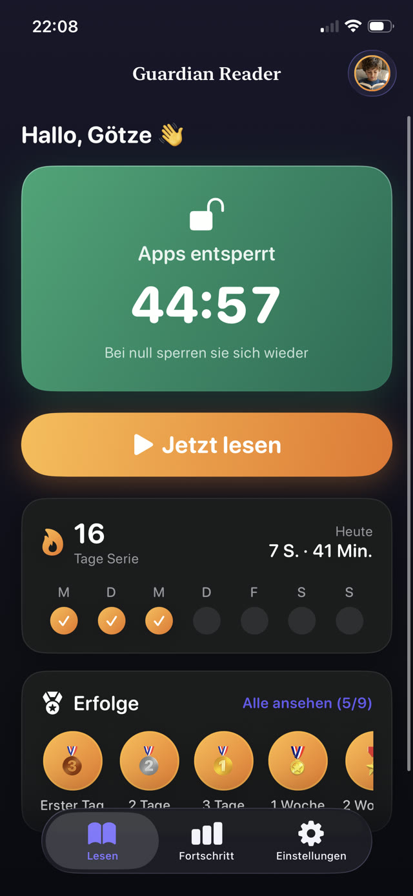

Mit der zweiten Variante lässt sich leichter leben, weil das Kind nicht mehr mit Ihnen streitet. Es entscheidet, ob es den Bildschirm genug will, um dafür zu zahlen. An den meisten Tagen will es das, und das Lesen findet statt.


Warum verdient besser ist als geschenkt
Was frei überreicht wird, gilt als Grundausstattung, und jede Kürzung fühlt sich wie eine Strafe an. Was verdient wird, gilt als Belohnung, und dieselbe Menge Bildschirmzeit wirkt plötzlich großzügig.
An der Bildschirmzeit hat sich nichts geändert. Nur an ihrem Status. Das ist der ganze Trick, und deshalb überlebt diese Rahmung dort, wo aus "du bekommst zwei Stunden" leise "warum nur zwei Stunden" wird.
Den Wechselkurs festlegen
Der Kurs muss auch an einem schlechten Tag zu schaffen sein. Wenn ein müder Achtjähriger ihn an einem Dienstagabend nicht schafft, bricht das System, und Sie streiten wieder.
Vernünftige Startpunkte, nach einer Woche Beobachtung angepasst:
- 4 bis 6 Jahre: eine Seite, etwa 5 Minuten, schaltet 15 Minuten frei.
- 7 bis 9 Jahre: zwei Seiten, etwa 10 Minuten, schalten 30 Minuten frei.
- 10 bis 12 Jahre: drei Seiten, etwa 15 Minuten, schalten 30 bis 45 Minuten frei.
- Jugendliche: vier Seiten oder mehr, etwa 20 Minuten, schalten 45 Minuten frei.
Der Teil, den alle unterschätzen: die Prüfung
Jedes Belohnungssystem stirbt an derselben Stelle, nämlich in dem Moment, in dem das Kind lernt, dass "ich habe gelesen" genügt. Sobald Behaupten so gut ist wie Tun, ist das System eine Formalität, und beide wissen es.
Papierlisten und Apps auf Vertrauensbasis haben dieses Loch. Ebenso Apps, die hinterher nur eine Verständnisfrage stellen, denn eine Frage zu einer Seite lässt sich oft raten, überfliegen oder aus den Bildern beantworten.
Die Lösung ist, das Lesen selbst zu prüfen, nicht die Behauptung darüber und nicht die Erinnerung daran.
Regeln, die halten
Drei Eigenschaften trennen eine Regel, die überlebt, von einer, die leise stirbt:
- Sie gilt jeden Tag, auch an den Tagen, an denen Sie erschöpft sind und am liebsten gar nichts durchsetzen würden.
- Sie hängt nicht davon ab, dass Sie im Raum sind, oder davon, einer unprüfbaren Behauptung zu glauben.
- Sie ist morgen dieselbe Regel. Einmal neu zu verhandeln lehrt Ihr Kind, dass die Regel verhandelbar ist.
Fehler, die Sie vermeiden sollten
- Das Tagesziel so groß machen, dass Scheitern normal ist. Scheitern muss selten sein, sonst entsteht nie eine Gewohnheit.
- Hausarbeit, Hausaufgaben und Lesen in ein Punktesystem werfen. Das verwischt die Botschaft; Lesen bleibt eine eigene Währung.
- Bildschirmzeit zugleich als Strafe und als Belohnung einsetzen. Wenn sie willkürlich entzogen werden kann, bedeutet es nichts mehr, sie zu verdienen.
- Den Kurs als Verhandlungsmasse ändern. Die Stabilität ist der Vorteil.
Wie Guardian Reader es durchsetzt
Guardian Reader ist genau um diesen Tausch herum gebaut. Sie wählen die Apps, die gesperrt werden, die Seiten pro Sitzung und die verdienten Minuten; Ihr Kind fotografiert die Seiten eines echten Buches, ein Foto pro Seite, und liest sie alle am Stück laut vor.
Die App gleicht das Gehörte mit dem gescannten Text ab, Wort für Wort. Ehrliches Vorlesen besteht bequem. Improvisieren, Nuscheln oder ein Video abspielen nicht, und eine in dieser Sitzung bereits gescannte Seite lässt sich kein zweites Mal scannen. Wenn die verdienten Minuten ablaufen, sperren sich die Apps von selbst wieder, auch wenn die App geschlossen ist.
Lesen schaltet den Bildschirm frei.
Gratis · Kein Konto, kein Tracking
Guardian Reader fürs iPhone holen